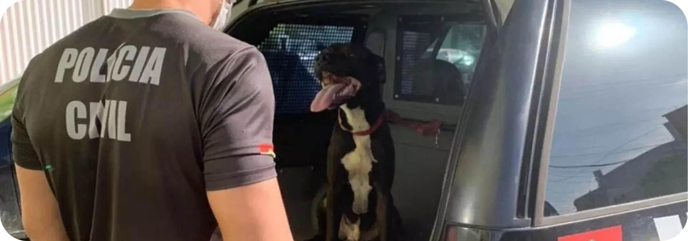

Estatísticas da Acapra
A presidente da Associação Brusquense de Proteção aos Animais (Acapra), Jéssica Ricardo, afirma que o número de adoções no ano de 2022 permanece dentro da média normal. Porém, segundo ela, há animais que estão há meses em lares temporários, o que não é considerado positivo.
Entre os mais procurados estão animais de raça, porte pequeno e se possível, filhotes de cores claras. Os adultos chamados de “básicos” passam despercebidos e esquecidos.
“Para tentar melhorar os números, fizemos sete feiras esse ano”, comenta a presidente.
Na avaliação dela, os números de cães abandonados ficaram na mesma linha que foi registrado no início de 2022. No entanto, os gatos abandonados diminuíram. Jéssica comenta que em anos anteriores era muito comum a denúncia de gatos abandonados, inclusive fêmeas que estavam prenhas, o que não foi registrado neste ano.
Faltam lares
Devido à falta de lares temporários, a entidade precisou priorizar os resgates de casos graves. Jéssica comenta que iniciou o período de férias com os mesmos que foram adotados para o lar em casa, além de outros seis que são lares temporários. “Infelizmente os resgates não acontecem pois as pessoas não estão dispostas a sair da zona de conforto para tentar auxiliar”, lamenta.
Jéssica ainda incentiva as pessoas a fazerem boas fotos dos bichinhos pois elas fazem a diferença e podem ser essenciais para a adoção do animal resgatado.